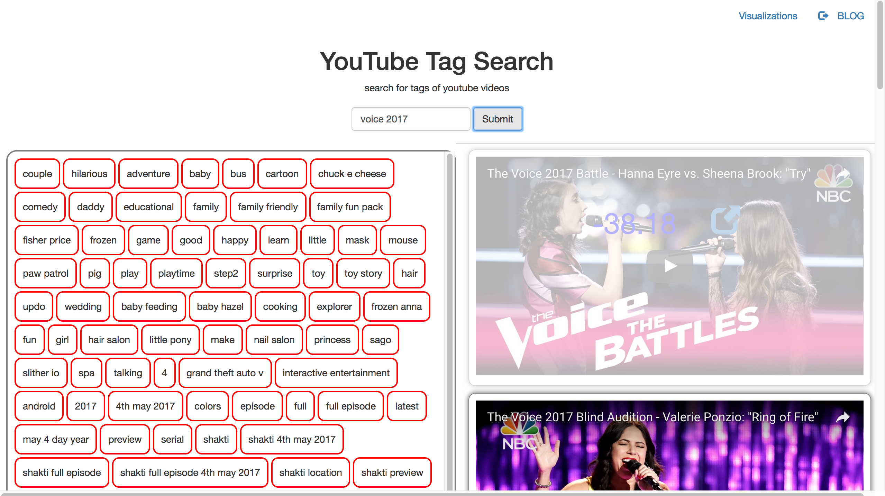

Youtube API Data Trend
Author: Aaron Wu (pwu8), Abhishek Dutta (adutta2), Natalie Roe (nroe), Preston Law (plaw), Wennie Zhang (yzhang46)
Summary
We finally finished our project and presented it at the poster fair today YAY! In the end, we ended up NLTK to perform sentiment analysis on the comments of the top 50 youtube videos in our data set. We then show how the sentiments relate to the videos in our data through visualizations and the web application we created.
Our web application uses JavaScript, HTML and CSS to provide as user-friendly way for users to see the tags that our predictive model assigned the videos in our data set as well as the sentiment associated with the video. For more information about how to run the web app, please refer to the README in the webapp folder of the github.
This is one visualization that shows the sentiments of the top 10 videos in our data set trend over time. Moving the mouse along the visualization displays the video ids of each video. For more information about our visualizations please refer to the final report.
We also created a visualization that displays the number of uploads to YouTube per state in the USA. We were able to create this visualization using the longitude and latitude features associated with each video that we collected from the YouTube Data API. Using this information, we are able to visualize which states have populations that upload to YouTube more frequently than others. Interestingly, Florida is the state with the most uploads and surpasses more heavily-populated states such as California and Texas. Dragging the cursor along the bottom of the visualization enables the user to see which states have a certain number of uploads to YouTube. Please open up the visualization in a browser to see this effect.
Challenges
Overall, these are the stats for the predicted tags on our videos: Recall: 70.7326%, Precision: 94.2882%, F1 score: 75.6736%.
One of the challenges we encountered during this project was the quota limit on the YouTube API, which forced us to greatly limit the number of videos we could run our predictive model on. Nevertheless, we still got some good results despite our limitations. Another challenge the fact that we used user-defined tags to help build our predictive model. User defined tags can be very random, poorly formatted, and not actually indicative of the content of the video. In addition, the frequency of these user-defined tags is very less and it is hard to find overlapping tags to train our model (Machine Learning) to predict tags for future videos. Overcoming this obstacle was one of our biggest challenges, and we are glad that our model was still able to yield good results despite this.
Implications
We hope that in the future our web applicatino can be used to help users become aware of the sentiments associated with a particular video with a tag before they watch the video. If a video has very negative sentiments, we hope to give the viewer a warning before they select to watch the video. This could be beneficial for parents with young children or for individuals who want to be contientious about the content that they are viewing on the web.
Home Page # is: here .